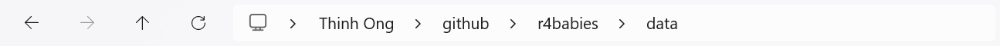
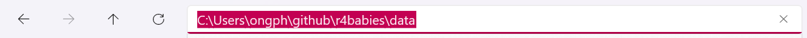
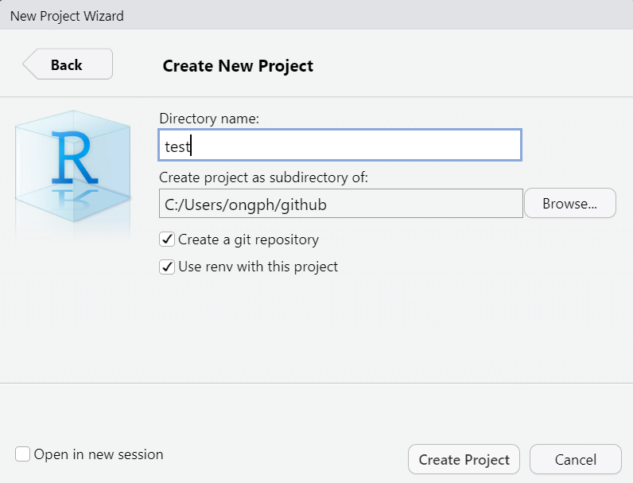
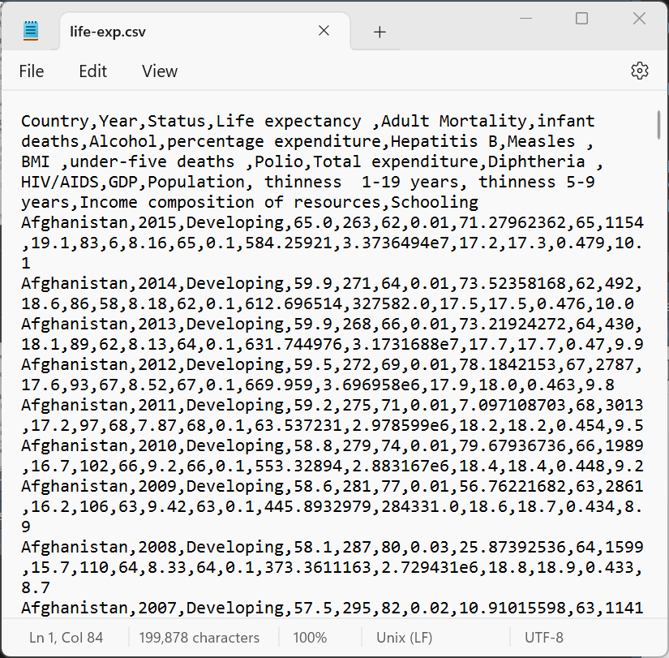
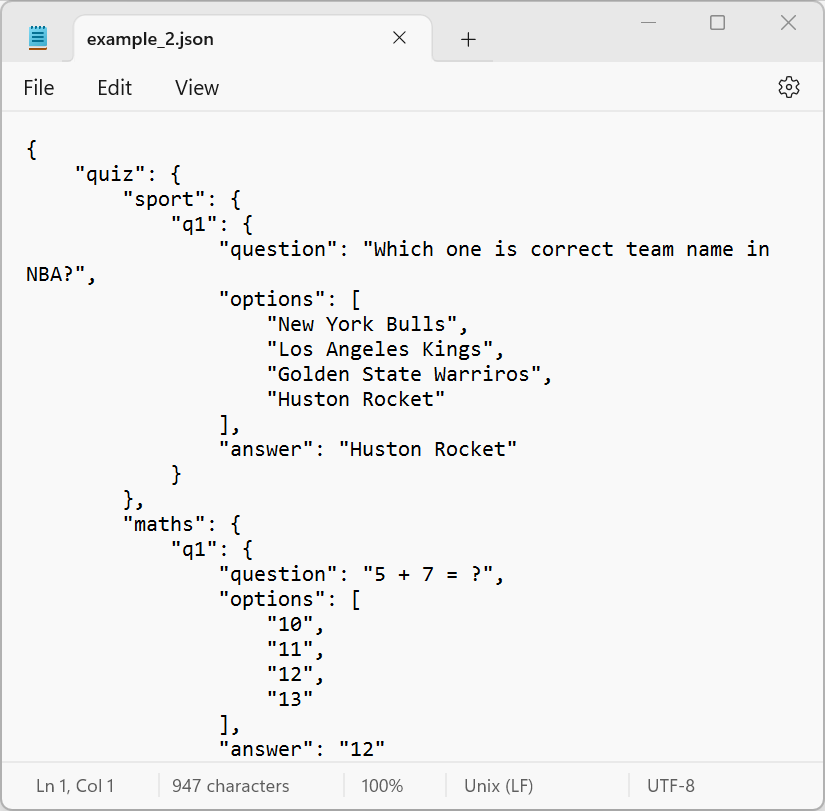
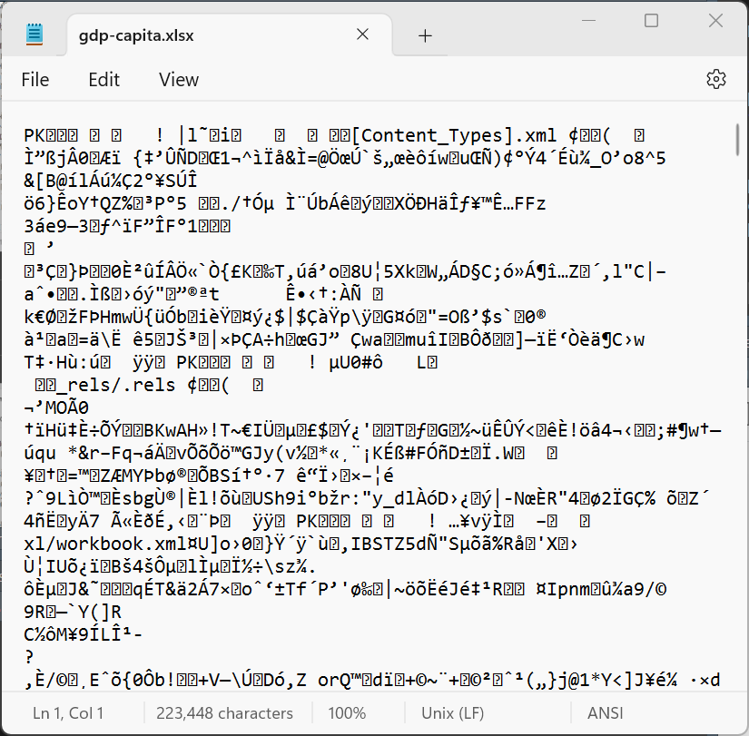
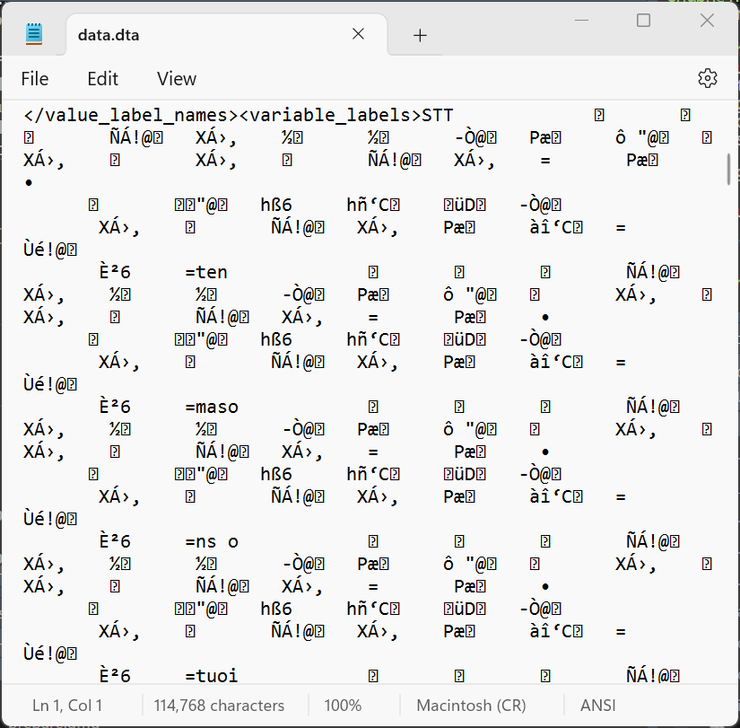

Chuẩn bị
R for babies
Mục tiêu
- Biết cách tìm path tới nơi lưu file data
- Biết cách tạo và quản lý R project
- Biết cách đọc data vào R
File data đang ở đâu?
Bước đầu tiên chúng ta phải biết file data đang nằm ở đâu trong máy tính. Vị trí, hay địa chỉ, hay đường dẫn lưu file data trong máy tính gọi là path.
Windows
Để Windows hiển thị đường dẫn trong Explorer, trên thanh menu chọn dấu ... > Options.
Windows
Chọn tab View, tick vào ô Display the full path in the title bar.
Windows
Sau khi làm các bước trên, click vào title bar của Explorer sẽ thấy hiển thị đầy đủ path của file hoặc folder hiện tại như sau:


Windows
Lưu ý
Trong Windows, khi copy path vào R cần sửa lại theo 1 trong 2 cách sau:
- Sửa tất cả dấu
\thành/:
C:/Users/ongph/github/r4babies/data- Sửa tất cả dấu
\thành\\:
C:\\Users\\ongph\\github\\r4babies\\dataMacOS
Để hiển thị đường dẫn trong Finder, trên thanh menu chọn View > Show Path Bar
MacOS
Tại thanh đường dẫn (Path Bar), nhấn chuột phải vào folder hoặc file, sau đó chọn Copy "tên_folder" as Pathname để copy đường dẫn đến folder.
Trong ví dụ sau, đường dẫn được copy là /Users/anhptq/Desktop/r4babies/data
Absolute path
Trong ví dụ trên, C:/Users/ongph/github/r4babies/data là đường dẫn tuyệt đối (absolute path). Absolute path là path đầy đủ từ đầu ổ đĩa cho đến file hay folder hiện tại.
Relative path
Trong folder C:/Users/ongph/github/r4babies có chứa 2 folders là /data và /analysis. Chúng ta có thể minh họa path này như sau:
C:
|-- Users
|-- ongph
|-- github
|-- r4adults
|-- data
|-- r4babies
|-- data
|-- analysisRelative path
C:
|-- Users
|-- ongph
|-- github
|-- r4adults
|-- data
|-- r4babies
|-- data
|-- analysisVí dụ chúng ta đang ở trong folder /data nằm trong /r4babies. Từ /data muốn hướng dẫn cho máy tính đi đến được folder /analysis có thể viết relative path như sau:
../analysisRelative path
C:
|-- Users
|-- ongph
|-- github
|-- r4adults
|-- data
|-- r4babies
|-- data
|-- analysis../analysisTrong đó:
..: đi ngược lên 1 folder, trong ví dụ này chúng ta đang ở/data, đi ngược lên 1 folder là/r4babies/analysis: sau khi đi ngược lên/r4babies, hướng dẫn máy tính đi tiếp tới folder/analysis
Relative path
C:
|-- Users
|-- ongph
|-- github
|-- r4adults
|-- data
|-- r4babies
|-- data
|-- analysisTương tự, chúng ta đang ở trong folder /data nằm trong /r4babies, muốn đến folder /data nằm trong /r4adults thì viết như sau:
../../r4adults/dataQuy tắc đặt tên files, folders
Để tránh bị lỗi trong quá trình sử dụng R, nên đặt tên files, folders theo các quy tắc sau:
- Không đặt tên có dấu tiếng Việt
- Không đặt tên quá dài
- Không đặt tên có các kí tự đặc biệt như
/,\,&,,,(,)…, tốt nhất chỉ nên đặt chữ và số
Quy tắc đặt tên files, folders
Để tránh bị lỗi trong quá trình sử dụng R, nên đặt tên files, folders theo các quy tắc sau:
- Không đặt tên chữ viết hoa viết thường lẫn lộn, nếu cần thì chỉ đặt theo quy luật camelCase (viết hoa chữ cái đầu của các từ sau từ đầu tiên, ví dụ
dataSoiHcm) hoặc PascalCase (viết hoa chữ cái đầu của tất cả các từ, ví dụDataSoiHcm)
Quy tắc đặt tên files, folders
Để tránh bị lỗi trong quá trình sử dụng R, nên đặt tên files, folders theo các quy tắc sau:
- Không có khoảng trống
" "trong tên, có thể đặt kiểu camelCase, hoặc sử dụng dấu-,_thay thế các khoảng trống: ví dụ không dùng têndata soi HCM 2023.xlsxmà có thể đặt làdataSoiHcm2023.xlsx, hoặcdata-soi-hcm-2023.xlsx, hoặcdata_soi_hcm_2023.xlsx
R project
Để tiện quản lý, mỗi dự án phân tích nên được đặt trong 1 folder. Trong folder này chứa tất cả data, code, bảng kết quả, biểu đồ… Chúng ta sẽ dùng chức năng tạo R project của RStudio để tạo folder này.
R project
Trên thanh menu vào File > New Project... > New Directory.
R project
Chọn Project Type là New Project.
R project
Đặt tên folder cho project này, và chọn đường dẫn nơi sẽ lưu project trong máy tính.
R project
Trong folder /test là một R project mới tạo này, chúng ta tạo thêm 2 folders /data và /analysis. Các thành phần trong folder này như sau:
test
|-- data
|-- data.csv
|-- analysis
|-- code.R
|-- analysis.Rmd
|-- test.Rproj- Folder
/data: chứa tất cả data. - Folder
/analysis: chứa tất cả file R Markdown.
R project
Từ bây giờ, mỗi lần muốn phân tích cho dự án /test này, chúng ta mở file test.Rproj bằng RStudio. Tất cả các file code trong folder /analysis có thể đọc file trong folder /data bằng cách dùng relative path. Những data quan trọng không thể copy vào chung trong project thì dùng absolute path. Ví dụ:
Phân biệt hai loại file chính
Chúng ta có thể gặp các files data ở rất nhiều format khác nhau, như .csv, .txt, .json, .xlsx, .dta… Tuy nhiên, một cách đơn giản, có thể chia các files thành 2 loại:
- Text files
- Binary files
Text files
Là những files khi mở bằng text editor như Notepad thì có thể đọc được các chữ trong file (human-readable). Các files như .csv, .txt, .json đều là text files. Trong R đã có sẵn những functions để đọc được hầu hết các text files.
Text files


.csv và .json khi mở bằng NotepadBinary files
Là những files khi mở bằng text editor như Notepad thì không đọc được các chữ trong file. Các files như .xlsx, .dta đều là binary files. Binary files cần được mở bằng các phần mềm chuyên dụng, ví dụ dùng Excel để mở file .xlsx thì mới đọc được dưới dạng chữ human-readable. Bản thân R không đọc được các loại file này, nhưng chúng ta có thể cài đặt và sử dụng các R packages để đọc binary files.
Binary files


.xlsx và .dta khi mở bằng Notepadread.table()
Lệnh read.table() là lệnh chung để đọc tất cả data dạng bảng.
Dùng ?read.table để đọc thêm hướng dẫn sử dụng và các arguments khác của lệnh.
read.table()
file: path của file data đầu vào, có thể dùng absolute path hoặc relative path.header: dòng đầu tiên của file data có phải là tên cột không. Nếuheader = TRUEthì R sẽ lấy các giá trị trong hàng đầu tiên làm tên cột. Nếuheader = FALSEthì R sẽ tự đặt tên cột làV1,V2,V3…
Lưu ý
Trong R, TRUE có thể viết tắt là T và FALSE có thể viết tắt là F.
read.table()
sep: các cột trong text file ngăn cách nhau bằng kí tự gì. Ví dụ filelife-exp.csvnếu chúng ta mở bằng Notepad sẽ thấy các cột ngăn cách nhau bằng dấu,.
read.table()
Chúng ta đọc file life-exp.csv vào R như sau:
V1 V2 V3 V4 V5 V6
1 Country Year Status Life expectancy Adult Mortality infant deaths
2 Afghanistan 2015 Developing 65.0 263 62
3 Afghanistan 2014 Developing 59.9 271 64
4 Afghanistan 2013 Developing 59.9 268 66
5 Afghanistan 2012 Developing 59.5 272 69
6 Afghanistan 2011 Developing 59.2 275 71
V7 V8 V9 V10 V11 V12
1 Alcohol percentage expenditure Hepatitis B Measles BMI under-five deaths
2 0.01 71.27962362 65 1154 19.1 83
3 0.01 73.52358168 62 492 18.6 86
4 0.01 73.21924272 64 430 18.1 89
5 0.01 78.1842153 67 2787 17.6 93
6 0.01 7.097108703 68 3013 17.2 97
V13 V14 V15 V16 V17 V18
1 Polio Total expenditure Diphtheria HIV/AIDS GDP Population
2 6 8.16 65 0.1 584.25921 3.3736494e7
3 58 8.18 62 0.1 612.696514 327582.0
4 62 8.13 64 0.1 631.744976 3.1731688e7
5 67 8.52 67 0.1 669.959 3.696958e6
6 68 7.87 68 0.1 63.537231 2.978599e6
V19 V20 V21
1 thinness 1-19 years thinness 5-9 years Income composition of resources
2 17.2 17.3 0.479
3 17.5 17.5 0.476
4 17.7 17.7 0.47
5 17.9 18.0 0.463
6 18.2 18.2 0.454
V22
1 Schooling
2 10.1
3 10.0
4 9.9
5 9.8
6 9.5read.table()
Nếu đọc với argument header = T:
Country Year Status Life.expectancy Adult.Mortality infant.deaths
1 Afghanistan 2015 Developing 65.0 263 62
2 Afghanistan 2014 Developing 59.9 271 64
3 Afghanistan 2013 Developing 59.9 268 66
4 Afghanistan 2012 Developing 59.5 272 69
5 Afghanistan 2011 Developing 59.2 275 71
6 Afghanistan 2010 Developing 58.8 279 74
Alcohol percentage.expenditure Hepatitis.B Measles BMI under.five.deaths
1 0.01 71.279624 65 1154 19.1 83
2 0.01 73.523582 62 492 18.6 86
3 0.01 73.219243 64 430 18.1 89
4 0.01 78.184215 67 2787 17.6 93
5 0.01 7.097109 68 3013 17.2 97
6 0.01 79.679367 66 1989 16.7 102
Polio Total.expenditure Diphtheria HIV.AIDS GDP Population
1 6 8.16 65 0.1 584.25921 33736494
2 58 8.18 62 0.1 612.69651 327582
3 62 8.13 64 0.1 631.74498 31731688
4 67 8.52 67 0.1 669.95900 3696958
5 68 7.87 68 0.1 63.53723 2978599
6 66 9.20 66 0.1 553.32894 2883167
thinness..1.19.years thinness.5.9.years Income.composition.of.resources
1 17.2 17.3 0.479
2 17.5 17.5 0.476
3 17.7 17.7 0.470
4 17.9 18.0 0.463
5 18.2 18.2 0.454
6 18.4 18.4 0.448
Schooling
1 10.1
2 10.0
3 9.9
4 9.8
5 9.5
6 9.2read.table()
Note
Dấu <- dùng để gán kết quả của một function cho một đối tượng (object) trong R. Nếu chỉ viết read.table(file = "data/life-exp.csv", header = T, sep = ",") thì R không lưu lại kết quả sau khi đọc mà chỉ hiển thị ra màn hình.
Sau khi gán kết quả đọc của read.table() vào object df, dùng lệnh head(df) để hiển thị 6 dòng đầu tiên của bảng.
read.csv()
File .csv là một định dạng thông dụng, tên đầy đủ là comma-separated values nghĩa là các giá trị được ngăn cách bởi dấu , (comma). Trong R có sẵn lệnh read.csv() để đọc file .csv.
Các arguments của read.csv() cũng tương tự read.table(), nhưng đã được quy định cho phù hợp với file .csv. Vì vậy, thường chỉ cần đặt path vào argument file là đủ.
read.csv()
Country Year Status Life.expectancy Adult.Mortality infant.deaths
1 Afghanistan 2015 Developing 65.0 263 62
2 Afghanistan 2014 Developing 59.9 271 64
3 Afghanistan 2013 Developing 59.9 268 66
4 Afghanistan 2012 Developing 59.5 272 69
5 Afghanistan 2011 Developing 59.2 275 71
6 Afghanistan 2010 Developing 58.8 279 74
Alcohol percentage.expenditure Hepatitis.B Measles BMI under.five.deaths
1 0.01 71.279624 65 1154 19.1 83
2 0.01 73.523582 62 492 18.6 86
3 0.01 73.219243 64 430 18.1 89
4 0.01 78.184215 67 2787 17.6 93
5 0.01 7.097109 68 3013 17.2 97
6 0.01 79.679367 66 1989 16.7 102
Polio Total.expenditure Diphtheria HIV.AIDS GDP Population
1 6 8.16 65 0.1 584.25921 33736494
2 58 8.18 62 0.1 612.69651 327582
3 62 8.13 64 0.1 631.74498 31731688
4 67 8.52 67 0.1 669.95900 3696958
5 68 7.87 68 0.1 63.53723 2978599
6 66 9.20 66 0.1 553.32894 2883167
thinness..1.19.years thinness.5.9.years Income.composition.of.resources
1 17.2 17.3 0.479
2 17.5 17.5 0.476
3 17.7 17.7 0.470
4 17.9 18.0 0.463
5 18.2 18.2 0.454
6 18.4 18.4 0.448
Schooling
1 10.1
2 10.0
3 9.9
4 9.8
5 9.5
6 9.2read_excel()
Dùng lệnh read_excel() trong package readxl để đọc các file excel (đuôi .xls hay .xlsx).
Chúng ta có thể thấy tên các arguments của read_excel() hoàn toàn khác với read.table() hay read.csv().
read_excel()
path: path của file data đầu vào.sheet: tên hoặc số thứ tự của sheet sẽ đọc vào R, nếu file có nhiều sheets.col_names: dòng đầu tiên của file data có phải là tên cột không, giống argumentheadercủaread.table().
read_excel()
# A tibble: 6 × 10
`Country Name` `Country Code` `2015` `2016` `2017` `2018` `2019` `2020` `2021`
<chr> <chr> <dbl> <dbl> <dbl> <dbl> <dbl> <dbl> <dbl>
1 Aruba ABW 28419. 28450. 29329. 30918. 31903. 24008. 29128.
2 Africa Easter… AFE 1554. 1444. 1625. 1558. 1508. 1356. 1546.
3 Afghanistan AFG 567. 523. 526. 492. 498. 512. 356.
4 Africa Wester… AFW 1882. 1649. 1590. 1735. 1812. 1688. 1767.
5 Angola AGO 3217. 1810. 2439. 2541. 2191. 1451. 1927.
6 Albania ALB 3953. 4124. 4531. 5288. 5396. 5343. 6377.
# ℹ 1 more variable: `2022` <dbl>Lưu ý
Một lỗi thường gặp với file excel là R đọc các file có merged cells không tốt. Vì vậy khi nhập data, nên tránh làm merged cells.
File SPSS, Stata, SAS
Dùng các lệnh read_sav() (SPSS), read_dta() (Stata) và read_sas() (SAS) trong package haven.
# A tibble: 6 × 28
case_id generation infection_date date_onset hosp_date
<chr> <dbl> <dttm> <chr> <dttm>
1 5fe599 4 2014-05-08 00:00:00 2014-05-13 2014-05-15 00:00:00
2 8689b7 4 NA 2014-05-13 2014-05-14 00:00:00
3 11f8ea 2 NA 2014-05-16 2014-05-18 00:00:00
4 b8812a 3 2014-05-04 00:00:00 2014-05-18 2014-05-20 00:00:00
5 893f25 3 2014-05-18 00:00:00 2014-05-21 2014-05-22 00:00:00
6 be99c8 3 2014-05-03 00:00:00 2014-05-22 2014-05-23 00:00:00
# ℹ 23 more variables: date_of_outcome <dttm>, outcome <chr>, gender <chr>,
# hospital <chr>, lon <dbl>, lat <dbl>, infector <chr>, source <chr>,
# age <chr>, age_unit <chr>, row_num <dbl>, wt_kg <dbl>, ht_cm <dbl>,
# ct_blood <dbl>, fever <chr>, chills <chr>, cough <chr>, aches <chr>,
# vomit <chr>, temp <dbl>, time_admission <chr>, merged_header <chr>,
# x28 <chr>Mục tiêu
- Biết cách tìm path tới nơi lưu file data
- Biết cách tạo và quản lý R project
- Biết cách đọc data vào R